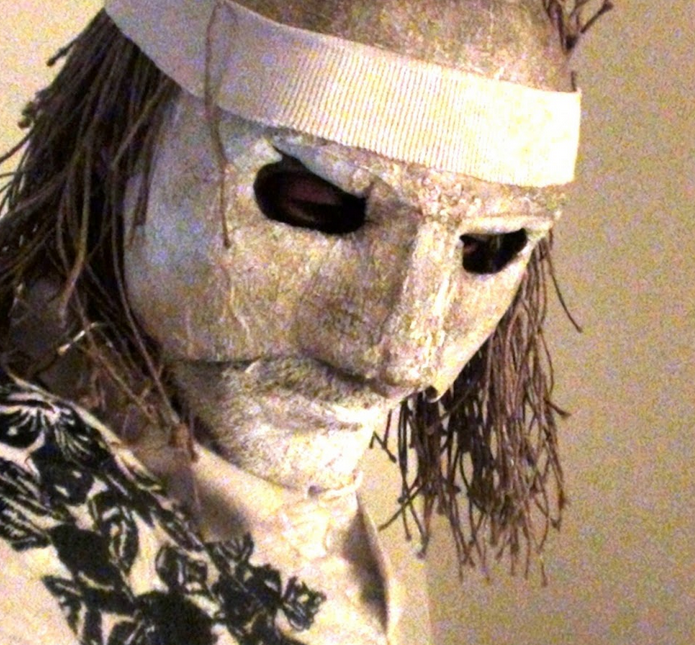
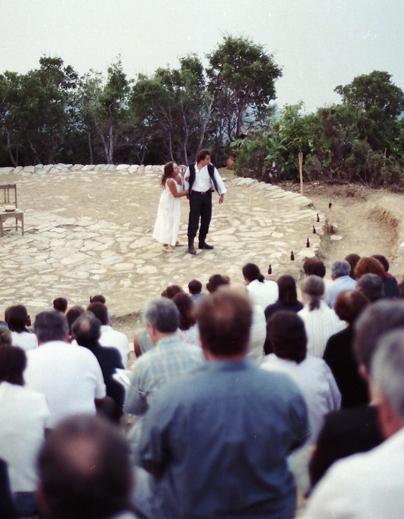
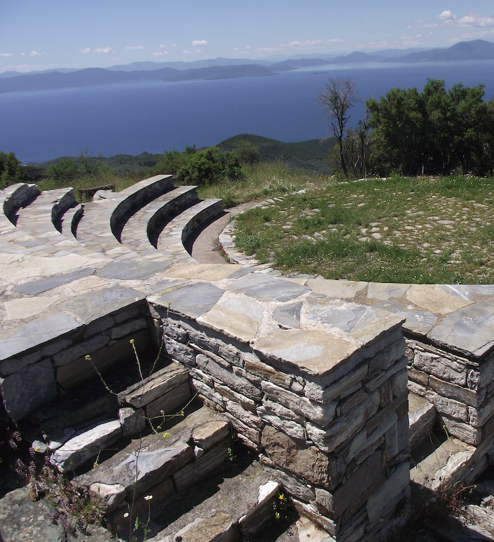
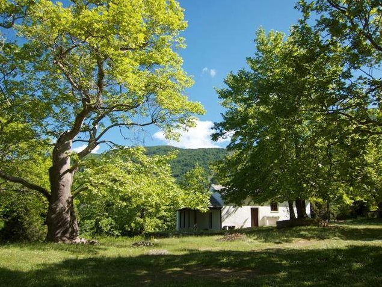
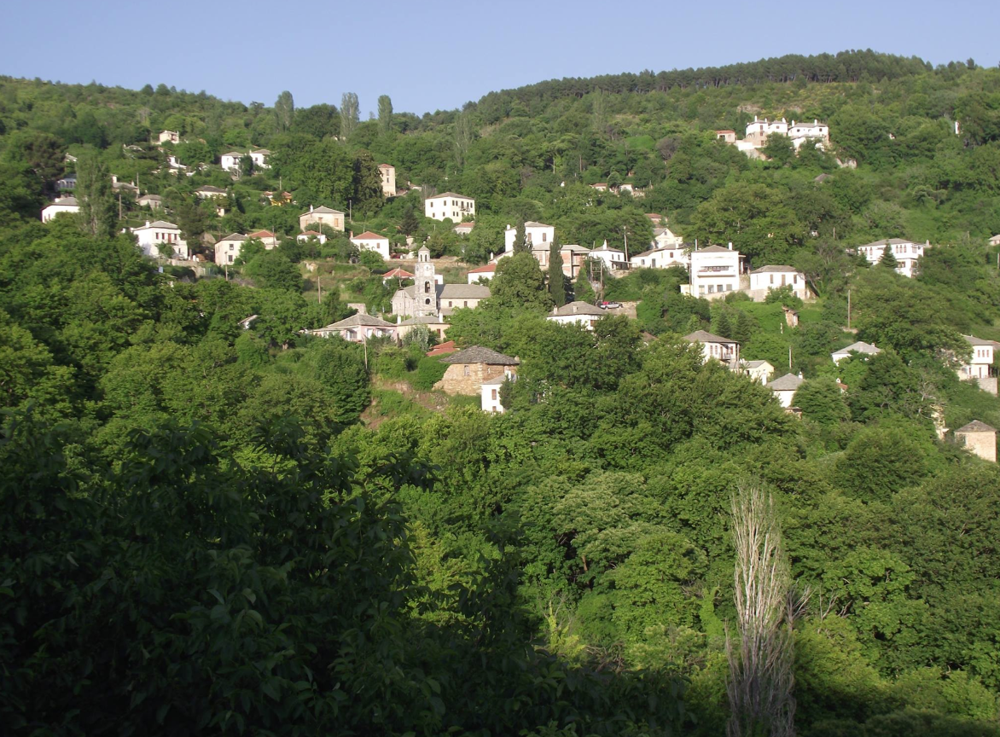

θέση εργαστηρίου Α - θέατρο Αλώνι

θέση εργαστηρίου B - Προφήτης Ηλίας

θέση εργαστηρίου Γ - Άγιος Γεώργιος
προσανατολισμός στο αρχαίο δράμα
22-27 Ιουλίου
εργαστήριο με τον Άρη Ρέτσο
Είναι γνωστό, από τότε κιόλας που ο νόμος της βαρύτητας επικράτησε στη Γη, ότι χωρίς τις αντιθέσεις, τις αντίθετες δυνάμεις, τα αντίθετα ¨θέλω¨ και τις αντίθετες πράξεις τόσο στην ιστορία του Ανθρώπου, όσο και σ’ αυτήν του Φυσικού γύρω μας κόσμου, ότι είναι αδύνατον να υπάρξει, όποια κίνηση, δράση ή πράξη είτε μέσα στη Ζωή και ακόμα περισσότερο στην Τέχνη, ξέχωρα και έξω από την ¨τάξη¨ αυτήν.
Ωστόσο, ¨καλλιτεχνικά¨ περιορίζοντας το θέμα, θα λέγαμε ότι η Τέχνη, και ειδικότερα η Τραγωδία, χωρίς να λύνει, ή ακόμα περισσότερο να φωτίζει το νόμο των αντιθέτων, φαίνεται να αναπαριστά και να αναπαράγει, θα ‘λεγε κανείς με υπερβολικά δραματικό και στα όρια του γκροτέσκου τρόπο, την εμμονή και το πάθος των Ηρώων, σαν την αρχή και την αιτία της συμφοράς των, θέλοντας για κάποιον παράξενο ίσως λόγο, να ¨αποπροσανατολίσει¨ την προσοχή και το ενδιαφέρον του κοινού, σε μια άλλη πλευρά της γνώσης.
Ο Άρης Ρέτσος με το εργαστήριο Προσανατολισμός στο Αρχαίο Δράμα διερευνά τη σχέση των αντιθέσεων. Μεταξύ εγώ και συνόλου, αντίθετων χαρακτήρων, διαλόγου και μονολόγου. Το σεμινάριο απευθύνεται σε ηθοποιούς και ερευνητές της αρχαίας τραγωδίας.
Πληροφορίες-δήλωση συμμετοχής μέχρι τις 10/07/2014 στο : theatroaloni95@gmail.com, 697 333 9142
Υπεύθυνος εργαστηρίου ΑΡΗΣ ΡΕΤΣΟΣ, ηθοποιός - σκηνοθέτης
Τρίτη 22 Ιουλίου μέχρι Κυριακή 27-Ιουλιου 2014
Μέγιστος αριθμός συμμετεχόντων : 20 άτομα
Κόστος συμμετοχής 100 Ευρώ
Διαμονή : για όσους δεν θα μείνουν σε ξενώνα, μπορούν να μείνουν χωρίς κόστος στο διαμορφωμένο σχολείο με εξοπλισμένη κουζίνα ντους κ.τ.λ.
Δήλωση συμμετοχής μέχρι της 15 Ιουλίου ( θα τηρηθεί σειρά προτεραιότητας )
Για τη δήλωση συμμετοχής υπεύθυνος:
Γιώργος Τριανταφύλλου τηλ. 6973339142
θέση εργαστηρίου Α - θέατρο Αλώνι
θέση εργαστηρίου B - Προφήτης Ηλίας
θέση εργαστηρίου Γ - Άγιος Γεώργιος